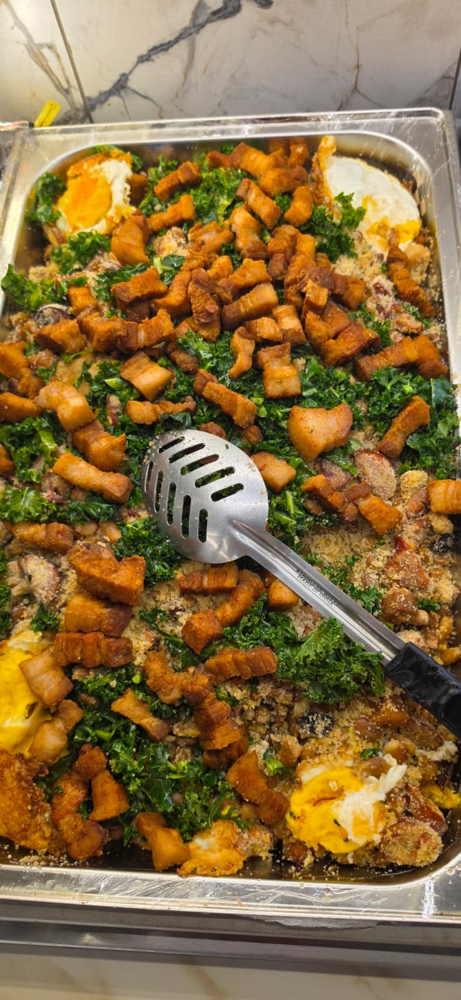
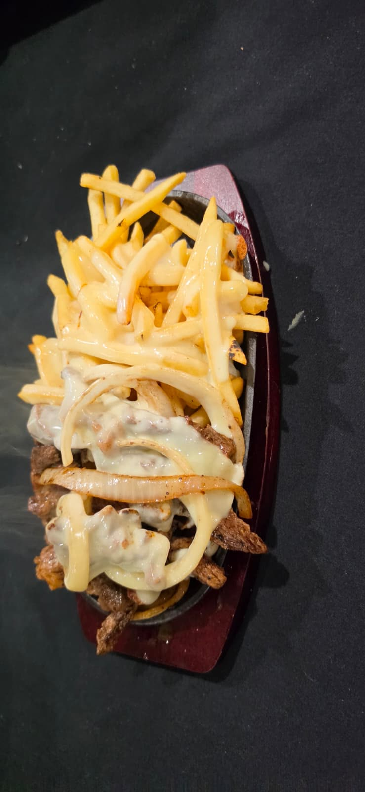

Churrasco na brasa
Skewers turning slowly over live coals — beef, sausage and chicken grilled the Brazilian way, then sliced right onto your plate.

Our story
Goianeiro brings the food of Brazil’s heartland to the Seattle area: slow-simmered beans, crackling torresmo, cassava fried golden, greens sautéed in garlic and meat straight off the coals. Comida de verdade — real food, made the way it is back home.
Minas e Goiás · Sabor de casa
From our kitchen
Skewers turning slowly over live coals — beef, sausage and chicken grilled the Brazilian way, then sliced right onto your plate.

The classic of Minas Gerais: beans tossed with toasted cassava flour, crispy pork belly, collard greens and egg.
Golden cassava, crackling pork belly and garlicky collard greens — the trio every Brazilian table knows by heart.

Sliced steak and onions brought to the table still sizzling on cast iron, piled with fries and melted cheese.
Why Goianeiro
Real food, cooked from scratch: the beans, stews and fried cassava you grew up with in Minas and Goiás.
Our churrasco grill keeps the skewers turning, so the meat on your plate is fresh off the fire.
Pão de queijo and coffee in the morning, the buffet at lunch, Brazilian burgers Thursday through Sunday nights.
Grab a full plate to go — churrasco, mandioca, rice and all the sides, packed hot.
Gallery
14338 124th Ave NE
Kirkland, WA 98034